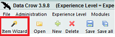
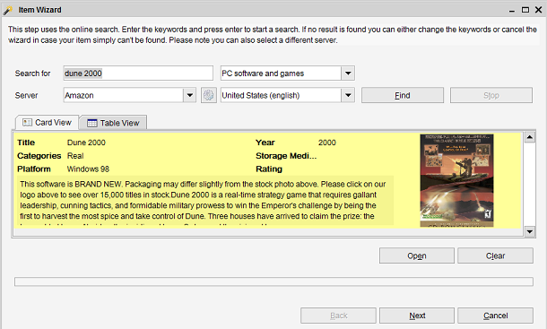
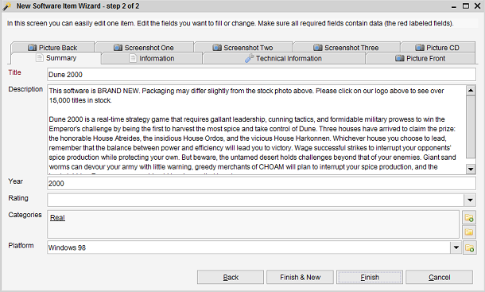

The new Item Wizard
Tool bar: First icon in the list
The wizard is the easiest way to add a new item. You get help and information for each step in the wizard.
You can cancel the wizard by pressing "cancel" at any time.

Step 1
In the first step the online search can be used to find the item online.
This step uses the Online Search functionality.
This step will be skipped in case the module does not have online services available.

Enter the name of the item you are looking for in the "Search for" field and press "Find" to start the search.
Once your item has been found click it once and press the "Next" button.
Step 2
In this step you can modify the information of the item (manually).
This section is better explained in the Item Form section of the Help.

Make your modifications and either press "Finish" to store the item in Data Crow or "Finish & New" to store the item and
restart the wizard. Select "Back" if you accidentally selected the wrong item in the previous step or press "Cancel" to exit
the wizard without saving anything.